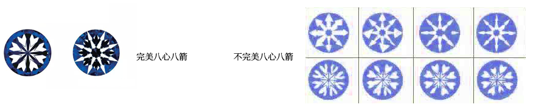
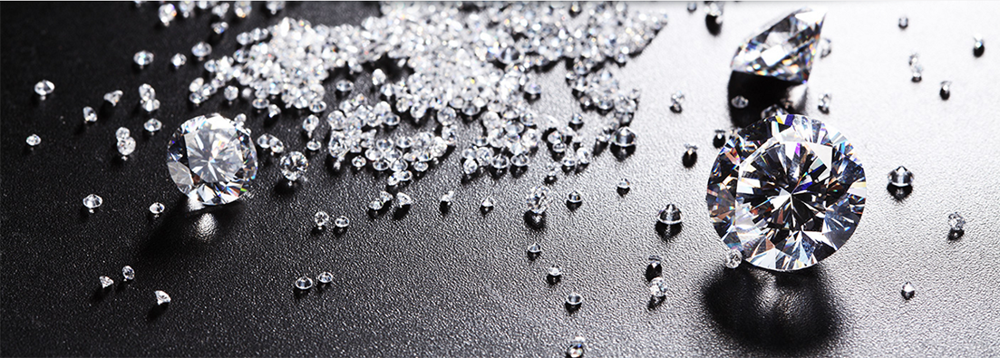

切工的质量是直接决定钻石火彩的重要因素，一颗钻石的闪烁程度、亮度很重要的原因是因为钻石的切工。
针对标准圆形明亮式钻石，GIA切工分级系统基于七个要素对钻石的切工进行评估：亮光、火彩、闪光、工艺、坚固性、抛光、对称性。
标准圆形明亮式切工的钻石从上到下的主要组成为冠部、腰围和亭部。 圆形明亮式切工钻石有 57 或 58 个刻面，第 58 个刻面是一个很小的平面，位于亭部底部（称为尖底）。
完美的切工可以让钻石内部呈现“八心八箭”的效果。

代表全球只有3%的一流高质量钻石才能达到的标准，这种切工使钻石几乎反射了所有进入钻石的 光线，一种高雅且杰出的切工。
代表全球大约15%的钻石切工。可以使钻石反射出和标准等级切工的光芒，但是价格稍高。
代表全球大约25%的钻石切工。是钻石反射了大部分进入钻石内部的光。
代表全球粗糙度为35%的钻石切工，仍然是优质钻石，但是一般切工加工的钻石反射的光线不及G 级切工。
这包含所有没有符合一般切工标准的钻石.这些钻石的切工要么深而窄要么浅而宽易于让光线从边 部或底部逸出，克拉盛宴不提供此等级的钻石。
很多人以为钻石的切工决定钻石的形状，以为切工就是将一颗钻石切成某个形状，其实切工本质是指钻石的亮光、火彩、
闪光、工艺、坚固性、抛光、对称性的优良程度。

切工对钻石价值的影响：切工对钻石的价格影响相对于重量、颜色、切工要小很多，就像钻石的颜色会很直观的看见一样，
切工的好和坏也会很直观的体现在钻石的火彩上。